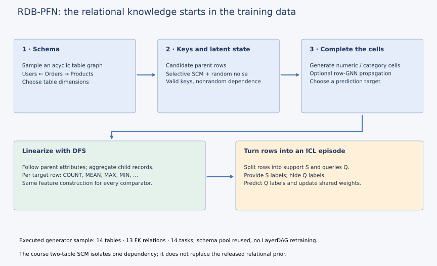
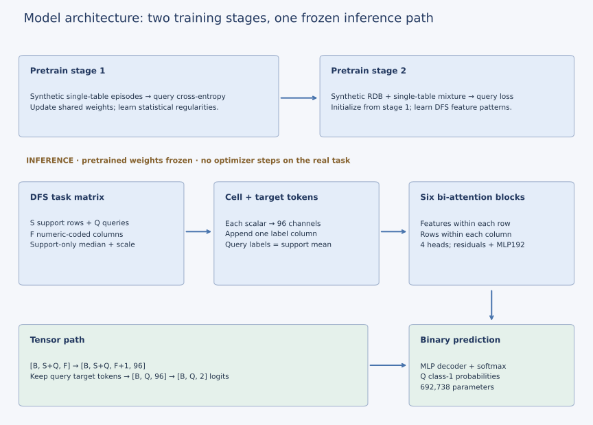
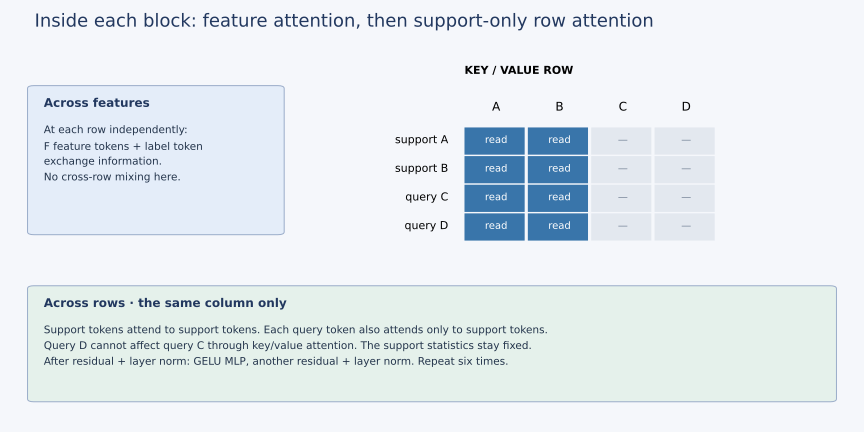

Year 5 · Quarter 1 · Lesson 166
RDB-PFN: synthetic relational priors
Quick reference · Full reproduction contract · Measured results
See the idea · then trace the details
RDB-PFN: relational tasks become tabular context
Synthetic relational structure enters through generated tasks and relational features.
1Generate linked records
Synthetic schema + foreign keys + table contents
Pretraining samples relational databases and prediction tasks. These generators determine which dependencies the learner practices.
2Construct relational features
Related records → DFS aggregates → feature table
Deep Feature Synthesis turns relational neighborhoods into tabular attributes such as counts and means. The released checkpoint receives this feature matrix, not raw graph edges.
3Predict from labeled support
Feature tokens + support labels → query logits
The transformer mixes features and support rows. Query labels remain hidden; a decoder reads the query label token. Evaluation uses fixed pretrained weights.
Pause and predict: Is the released checkpoint passing GNN messages along foreign keys during this forward pass?
No. Its input is the released feature matrix. Relational feature construction and transformer inference are separate stages.
Answer: No. Its input is the released feature matrix. Relational feature construction and transformer inference are separate stages.
1 · Where do the frozen weights come from?¶
Your tangible win: trace how a synthetic relationship becomes a useful input to a frozen predictor, then defend one reproduced result without claiming to have reproduced its pretraining. Allow 25 minutes for the reading and trace; use a separate session for the notebook and defense.
Lesson 165 explained how a model can adapt by reading labeled context while keeping its weights fixed. Its historical KumoRFM experiment remained unrun because matching artifacts were unresolved. That leaves another question: what could train those weights when real relational databases are scarce or private? RDB-PFN proposes generating synthetic databases and learning from prediction tasks made from them. Here, released code and checkpoints let us test a selected result. Paper §§1,5.
Retrieve the PFN idea from Lesson 061: a generator supplies many small supervised problems. A shared model repeatedly sees a labeled support set and predicts held-out labels. Training adjusts its weights across problems. At deployment, a new support set describes the new problem; inference need not optimize the weights again. If you cannot explain support versus query, revisit the first two sections of Lesson 165. L165b is a planned comparison, not an assumed prerequisite.
Reading route. First trace a parent value into its children's summaries. Then trace those summaries through feature attention and support-row attention. Only after those paths are clear, read the benchmark table and its provenance limits. PFN expands to prior-data fitted network: its pretraining tasks express a prior, or assumptions about the problems it will later encounter.
“Synthetic” alone does not solve transfer. The generator must produce dependencies that help on real inputs. Independent random tables with valid keys can still omit the useful relationship between a customer's past orders and a future outcome. The learning question becomes: which relational regularities does the prior expose?
2 · Generate a relationship, then hide its answer¶
Generator vocabulary. A latent value is hidden from the predictor. A structural causal model (SCM) generates values through specified dependencies plus random noise. An acyclic schema has no directed cycle of parent links. A support/query episode is one small prediction problem used during pretraining. These terms describe how tasks are made; they do not certify causal knowledge about a real database.
The paper separates the generator into schema, structure and content. The schema fixes which tables may refer to which parents. Structure selects actual parent rows and latent states. Content fills the remaining cells, with an optional row-GNN variant propagating information. Tasks then select targets and form support/query episodes. The proposed theoretical coverage depends on assumptions including acyclic schemas; it is not a guarantee that every business database is represented. Paper §§4–5, Appendix E.


Start with a small course example, not the full released generator. A parent has an unobserved value z. Each child stores a valid parent key and a value a × z[parent] + noise. The coefficient a controls how much of the parent's signal is carried by its children. Setting a=0 removes that path while preserving the keys and noise draws. Merely keeping the schema would not preserve the predictive dependency.
latent = rng.normal(size=parents)
foreign_keys = rng.integers(parents, size=children)
noise = rng.normal(scale=0.2, size=children)
child_value = strength * latent[foreign_keys] + noise
Deep Feature Synthesis (DFS) turns related records into a row vector. It can copy parent attributes into a child row and summarize children at their parent. For parent A with child values 2 and 6, COUNT=2 and MEAN=4. For parent B with value 10, the result is [1,10]. Child order must not change either summary. Our course convention maps a parent with no children to [0,0]; the released pipeline handles missing features through its own support-only median step. Paper §5.2; source preprocessing.
The relational information therefore reaches the model through the generated dependencies and DFS features. This version does not feed the raw foreign-key graph directly into the inference transformer. Comparing RDB-PFN with a tabular model on raw root attributes would confound representation and prior. Our three arms get the same DFS matrix.
Executed source experiment: one original generator draw produced 14 tables, 13 FK relationships and 14 tasks. We checked every generated key. It reused the released schema pool; it did not retrain LayerDAG or recreate the full pretraining corpus. Generator receipt.
3 · Model architecture: cross features, then cross examples¶
In plain terms. First let the columns within one row interact. Then let that row compare itself with labeled support rows. Repeat, and read the query's output. Keeping these two attention directions separate makes the information boundary easier to see.


Read the path with one database task in mind. Suppose S=512 support rows and Q=702 queries. Each row has F DFS features. Median imputation and feature normalization use support statistics. A shared linear projection turns every scalar into 96 channels. The model appends one additional token column for the label: known support labels, support-label mean in query slots. Query labels never enter this tensor. Released base model.
Decode the diagram. Median imputation replaces a missing value with the middle observed support value for that feature. A channel is one coordinate of a token vector. MLP means a small feed-forward neural network; GELU is its smooth nonlinear activation. A residual connection adds an update to the existing vector, and layer normalization rescales its coordinates. Logits are unnormalized class scores; softmax turns them into probabilities that sum to one. In the tensor path, B counts batched tasks, S support rows, Q queries and F features.
One block performs two attention operations and a feed-forward update:
- Feature attention: within each row, the feature and label tokens exchange information. A support label can affect its own feature tokens; a query gets only its placeholder label.
- Row attention: within each column, every receiving row attends to support rows only. This lets a query compare its DFS pattern with labeled examples without reading other queries as keys or values.
- Feed-forward update: residual connections, layer normalization and a GELU MLP transform the tokens. Repeat six blocks, then decode each query's label-column token into two logits and apply softmax.


The visible notebook implementation contains the whole 692,738-parameter numeric base model. These lines carry the row-attention rule; the two slices share attention weights:
keys = tokens[:, :support]
support_out = row_attention(keys, keys, keys)[0]
query_out = row_attention(tokens[:, support:], keys, keys)[0]
tokens = tokens + torch.cat([support_out, query_out], dim=1)
Changing query D cannot change query C through row-attention keys. Changing a support label can. This distinction is testable: our checkpoint checks perturb other queries and change batching while holding support fixed. Both released RDB-PFN checkpoints match the visible implementation's checked outputs, with gradient agreement to numerical precision. Parity receipt.
Training versus inference. The first training stage uses synthetic single-table tasks. The second starts from those weights and mixes relational and single-table tasks, minimizing query-label cross-entropy. The released second-stage config lists 2.2 million steps across 8 GPUs. Our evaluation loads its final checkpoint; it does not execute that training schedule. The query labels are needed for the training loss, but remain absent from the model's input. Training config, loss code.
4 · Predict an intervention before moving the controls¶
The explorer uses the six-parent course SCM and the actual released RDB-PFN checkpoint. Values are precomputed by the visible Python model, not fitted JavaScript scores. Rows 0…S−1 are support; remaining rows are queries. The binary label is the sign of the invented parent latent. We omit that latent from features and give the model only count/mean summaries.
Predict which objects change when you flip only the supplied support labels. The DFS matrix and attention mask should stay fixed. The query probabilities may change. Changing dependency strength instead keeps foreign keys fixed and changes the mean-value features. Neither intervention retrains the checkpoint.
These are mechanism traces, not accuracy estimates. Six invented parents cannot establish that the prior transfers. With fewer support rows, some of the same rows change roles, so compare a common query such as row 5 rather than pretending that every displayed prediction covers the same population. A probability need not move monotonically with dependency strength.
5 · The approved full selected experiment¶
We evaluated the complete Table 9 driver-dnf, 512-context, ten-seed selection: RDB-PFN, its single-table-only checkpoint and TabICLv1.1 with its full 32-estimator ensemble. All models received identical selected support keys and the same 702 test queries. No test-driven checkpoint choice, reduced ensemble or missing seed. Paper Appendix F, Table 9, exact contract.
| Model | Paper AUROC | Fresh mean ± sample SD | Result |
|---|---|---|---|
| RDBPFN | 0.7219 | 0.721938 ± 0.019983 | CLOSE |
| RDBPFN_single | 0.6640 | 0.663990 ± 0.034177 | CLOSE |
| TabICLv1.1 | 0.7176 | 0.717568 ± 0.009770 | CLOSE |
Every mean rounds to the corresponding paper value. The paired mean RDB-PFN gain over the single-table checkpoint is 0.057948 AUROC, with seed-difference SD 0.043287. The gain over TabICLv1.1 is 0.004369, with SD 0.019808. These are ten support draws on one task and a shared test set, not independent databases or proof of broad superiority. The single-table comparison also changes training stage and total compute; it is not a matched-compute causal isolation of the relational prior.
Two evidence boundaries matter even with that close match:
- Target meaning: all 12,679 released labels are the complement of the current raw-data DNF definition on the checked keys. We retained the release for numerical replay. To interpret scores as current-definition DNF risk, complement both labels and probabilities. The column name alone is insufficient provenance.
- Historical features: three available MAX timestamp features stay before their owner cutoffs, and the source config requests temporal DFS. We did not regenerate every released feature from the original historical database. Availability history and exact historical preprocessing identity remain unestablished.
The independent evaluator recomputes every score and validates all 21,060 predictions against 702 complete (driverId,date) keys. That is complete selected checkpoint evaluation. Fresh foundation-model pretraining and the whole 19-task benchmark remain NOT_RUN. The conservative budget accounting is $4.41, including reservations and overhead; it is not an itemized invoice. Evaluation audit, cost receipt.
6 · Make the explanation survive a changed example¶
The notebook has three live tasks: generate the two-table dependency, implement order-invariant child aggregation, and construct the support-only attention mask. Their outputs feed the checkpoint explorer. Incorrect key handling, constant aggregation and query-visible masks must fail immediate checks. The full model and complete benchmark-evidence replay are supplied as readable code.
Then write a 400–600 word defense using the template. Explain a changed schema or an empty child group, identify the weights that remain fixed, interpret the paired results, and name the pretraining and provenance work still missing. The solution's execution is author preparation; learner status remains PENDING_WRITTEN_DEFENSE until your explanation is reviewed.
Primary reading: Wang et al., v5, §§5–6 and Appendix A.3/C.2/F. Read the generator and attention sections first, then check the 512-row protocol against the source files. Use the quick reference for the tensor path.
Return tomorrow and trace the mask without looking. In a week, explain why identical DFS inputs are necessary for the comparison but insufficient to identify the causal effect of the prior. Ask the agent about any unclear operation, or bring your written defense for review. Lesson 167 will ask which parts of this tabular-PFN machinery carry into relational problems and which require new assumptions.